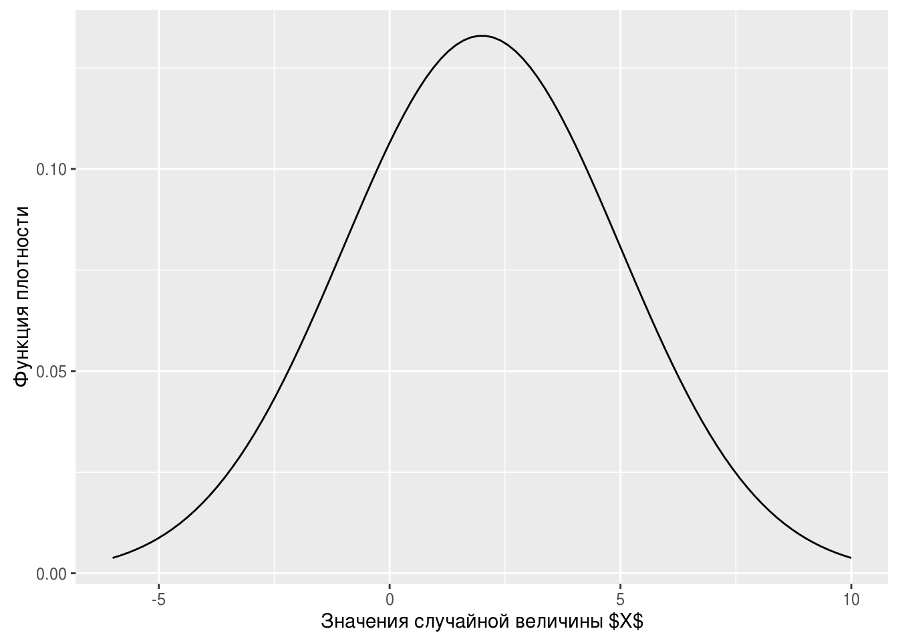
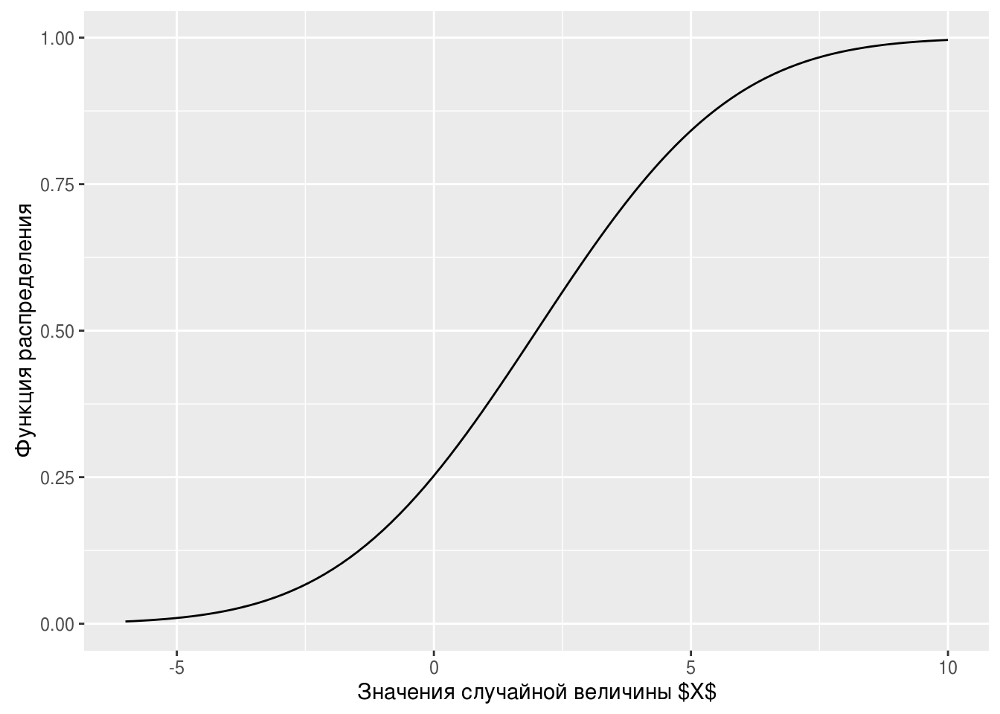

Глава 3 Статистика и не только
ываываыв ываываыв
3.1 Генерирование случайных величин
Для решения задач по теории вероятностей или исследования свойств статистических алгоритмов может потребоваться сгененировать случайную выборку из заданного закона распределения.
Генерируем 10 равномерных на отрезке \([4;10.5]\) случайных величин:
runif(10, min = 4, max = 10.5)## [1] 6.587962 10.151660 6.936869 10.046754 7.276973 4.122887 5.645991
## [8] 4.248469 9.457907 8.835355Генерируем 10 нормальных \(N(2;9)\) случайных величин с математическим ожиданием \(2\) и дисперсией \(9=3^2\):
rnorm(10, mean = 2, sd = 3)## [1] 4.3502202 2.9828070 3.9621799 2.9978455 -4.5707466 0.9168622
## [7] 6.8246804 3.1700460 -2.2788595 -0.5334796Например, с помощью симуляций легко оценить математическое ожидание \(E(1/X)\), где \(X \sim N(2;9)\). Для этого мы вспомним Закон Больших Чисел. Он говорит, что арифметическое среднее по большой выборке стремится по вероятности и почти наверное к математическому ожиданию. Поэтому мы просто сгенерируем большую выборку в миллион наблюдений:
n_obs <- 10^6
x <- rnorm(n_obs, mean = 2, sd = 3)
mean(1/x)## [1] 0.1398236Также легко оценить многие вероятности. Например, оценим вероятность \(P(X_1 + X_2 + X_3^2 > 5)\), где величины \(X_i\) независимы и одинаково распределены \(X_i \sim U[0;2]\):
n_obs <- 10^6
x_1 <- runif(n_obs, min = 0, max = 2)
x_2 <- runif(n_obs, min = 0, max = 2)
x_3 <- runif(n_obs, min = 0, max = 2)
success <- x_1 + x_2 + x_3^2 > 5
sum(success) / n_obs## [1] 0.147191Здесь вектор success будет содержать значение TRUE там, где условие x_1 + x_2 + x_3^2 > 5 выполнено, и FALSE там, где условие не выполнено. При сложении командой sum() каждое TRUE будет посчитано как единица, а каждое FALSE как ноль. Поэтому sum(success) даст количество раз, когда условие x_1 + x_2 + x_3^2 > 5 выполнено.
С любым распределением [xxx] в R связано четыре функции: r[xxx], d[xxx], p[xxx] и q[xxx]. Для примера возьмём нормальное распределение \(N(2;9)\):
- Функция для создания случайной выборки из нормального \(N(2; 9)\) распределения —
rnorm:
x <- rnorm(100, mean = 2, sd = 3) # случайная выборка из 100 нормальных N(2; 9) величин
head(x, 10) # первые 10 элементов вектора## [1] 0.9834764 -1.5077047 -1.4858843 0.9580893 -0.9667682 4.4984994
## [7] 0.4369833 -1.9777931 -6.3115086 0.7384105- Функция плотности —
dnorm:
x <- seq(from = -6, to = 10, length.out = 100)
y <- dnorm(x, mean = 2, sd = 3)
qplot(x = x, y = y, geom = "line") + xlab("Значения случайной величины $X$") + ylab("Функция плотности")
Для дискретных распределений с буквы d начинается название функции, возвращающей вероятность получить заданное значение. Найдём для случайной величины \(W\), имеющей Пуассоновское распределение с параметром \(\lambda = 2\) вероятность \(P(W = 3)\):
dpois(3, lambda = 2)## [1] 0.180447- Функция распределения, \(F(t)=P(X\leq t)\) —
pnorm:
x <- seq(from = -6, to = 10, length.out = 100)
y <- pnorm(x, mean = 2, sd = 3)
qplot(x = x, y = y, geom = "line") + xlab("Значения случайной величины $X$") + ylab("Функция распределения")
- Квантильная функция или обратная функция распределения, \(q(x) = F^{-1}(x)\) —
qnorm:
Найдём перцентили 5%, 15% и 90% для нормального \(N(2; 9)\) распределения:
x <- c(0.05, 0.15, 0.9)
qnorm(x, mean = 2, sd = 3)## [1] -2.934561 -1.109300 5.844655Иногда бывает полезно получить случайную выборку из заданного вектора без повторений:
sample(1:100, size = 20)## [1] 40 4 100 47 6 22 51 42 82 31 97 7 86 45 61 30 2
## [18] 48 71 78Или с повторениями:
sample(c("Орёл", "Решка"), size = 10, replace = TRUE)## [1] "Орёл" "Решка" "Решка" "Орёл" "Решка" "Решка" "Орёл" "Орёл"
## [9] "Решка" "Решка"Можно добавить неравные вероятности:
sample(c("Орёл", "Решка"), size = 10, replace = TRUE, prob = c(0.3, 0.7))## [1] "Решка" "Решка" "Решка" "Решка" "Орёл" "Орёл" "Орёл" "Решка"
## [9] "Решка" "Решка"Если выполнить команду rnorm(10, mean = 2, sd = 3) на двух разных компьютерах или два раза на одном и том же, то результат будет разный. Не зря же они случайные :) Однако генерирование случайных величин никак не противоречит идее абсолютно точной воспроизводимости исследований. Для того, чтобы получились одинаковые результаты, необходимо синхронизировать генераторы случайных чисел на этих двух компьютерах. Делается это путём задания зерна генератора случайных чисел (seed). Зерно также называют стартовым значением. В качестве зерна подойдёт любое целое число.
И в результате запуска кода
set.seed(42)
rnorm(1, mean = 2, sd = 3)## [1] 6.112875все компьютеры выведут число \(6.112875\).
Если код содержит генерерирование случайных чисел, то необходимо задавать зерно генератора случайных чисел!
3.2 Базовые статистические тесты
…
3.3 Множественная регрессия
…
Эконометристы любят копаться в остатках :)
3.4 Квантильная регрессия
Незаслуженно забытой оказывается квантильная регрессия. Коэнкер (ссылка) утверждает, что развитие эконометрики началось именно с квантильной регрессии. Для оценок квантильной регрессии не существует формул в явном виде, поэтому она проиграла классической регрессии среднего с формулой \(\hat\beta = (X'X)^{-1}X'y\). Сейчас компьютер позволяет начихать на отсутствие явных формул :)
…
3.5 Инструментальные переменные
Каждый исследователь мечтает обнаружить не просто статистическую связь, а причинно-следственную. К сожалению, это не так просто. Фиксируя количество людей с зонтиками на улице и количество осадков но не зная физическую природу дождя, невозможно определить, вызывают ли люди с зонтиками дождь или наоборот. Для выяснения причинно следственных связей необходим случайный эксперимент. Например, можно выбрать несколько случайных дней в году и выгнать толпу знакомых с зонтами на улицу, а затем посмотреть, было ли больше осадков в эти дни.
Инструментальные переменные часто используются исследователями при поиске причинно следственных связей, но это ни в коем случае не означает, что введение инструментальных переменных само по себе гарантирует нахождение причинно-следственной связи!
Для обнаружения причинно-следственной связи необходимо либо использовать данные случайного эксперимента, либо прекрасно разбираться в закономерностях происходящего.
Этот раздел не о том, как обнаружить причинно-следственную связь, а о том, как реализовать метод инструментальных переменных в R и как его проинтепретировать.
3.6 Гетероскедастичность
…
3.7 Работа с качественными переменными
…
3.8 Логит и пробит с визуализацией
…
3.9 Метод главных компонент
…
3.10 Мультиколлинеарность
…
3.11 LASSO
…
3.12 Метод максимального правдоподобия
…
3.13 Метод опорных векторов
…
3.14 Случайный лес
…
3.15 Экспоненциальное сглаживание
…
3.16 ARMA модели
…
3.17 GARCH
…
3.18 VAR и BVAR
…
Я не верю в пользу от структурных BVAR, поэтому их здесь нет :)
3.19 Панельные данные
…
3.20 Байесовский подход: первые шаги
…
3.21 Байесовский подход: STAN
…
3.22 Карты
Где карта, Билли?
3.23 Дифференциальные уравнения
…
3.24 Задачи оптимизации
…